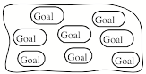
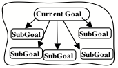
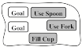
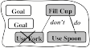
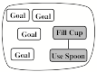
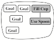
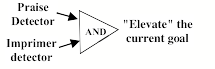

Part II. ATTACHMENTS AND GOALS
This is a draft 28-Jul-05 of Part II of The Emotion Machine by Marvin Minsky. Please send comments to minsky@media.mit.edu.
§2-1. Playing with Mud.......................................... 1
§2-2. Attachments and Goals.................................. 2
§2-3. Imprimers...................................................... 4
§2-4. Attachment-Learning Elevates Goals............. 6
§2-5. Learning and pleasure.................................... 7
§2-6. Conscience, Values and Self-Ideals............... 8
§2-7. Attachments of Infants and Animals............ 10
§2-8. Who are our Imprimers?.............................. 13
§2-9. Self-Models and Self-Consistency.............. 15
§2-10. Public Imprimers....................................... 16
"It's not just learning things that's important. It's learning what to do with what you learn and learning why you learn things at all that matters." —Norton Juster, in The Phantom Tollbooth
A child named Carol is playing with mud. Equipped with a fork, a spoon, and a cup, her goal is to bake a make-believe cake, the way she's seen her mother do. Let’s assume that she is playing alone, and imagine three things that might happen to her.
• Playing alone. She wants to fill her cup with mud, and first tries to do this with her fork, but this fails because the mud slips through. She feels frustrated and disappointed. But when she succeeds by using the spoon, Carol feels satisfied and pleased.
What might Carol learn from this? She learns from her ‘trial and error’ experience that forks are not good for carrying mud. But she learns from her success with a spoon, that these are good tools for moving a fluid. From failures we learn which methods don’t work—while successes teach us which methods succeed. [But see §9-2.]
Note that Carol did this while working alone—and acquired new knowledge, all by herself. In the course of learning by trial and error, a person requires no teacher to help her.
• A Stranger Scolds. Unexpectedly, a stranger reproaches her: "That's a naughty thing to do." Carol feels anxious, alarmed, and afraid. Overcome by fear and the urge to escape, she puts her present goal on hold—and runs to find her mother.
What might Carol learn from this? She may not learn much about working with mud, but may classify this as a dangerous place. Also, too many scary encounters like this might make her become less adventurous.
• Her Mother's Reproach. Carol returns to her mother's protection—but instead of assurance, her parent rebukes her. "What a disgraceful mess you've made! See what you've done to your clothes and face. I scarcely can bear to look at you!" Carol, ashamed, begins to cry.
What might Carol learn from this? She’ll become less inclined toward playing with mud. If her parent had chosen to praise her instead, she would have felt pride instead of shame—and in future times would be more inclined to further pursue that same kind of play. In the face of a parent's blame or reproach, she learns that her goal was not good to pursue.
Think of how many emotional states a child engages in the thousand minutes of each of its days! In this very brief story we’ve touched upon satisfaction, affection, and pride—passions we think of as positive. We also encountered shame and disgrace—and fear, anxiety, and alarm—all feelings we think of as negative. What could be the functions of these various kinds of mental conditions? Why do they seem to come in opposing pairs? How could the physical systems in our brains produce these sorts of feelings and thoughts? This book will try to answer many such questions, but this chapter will mainly focus on some ideas about the functions of our children’s early attachments to other persons.
Clearly, attachments help young animals to survive, through nourishment, comfort, and protection from harm. However, this chapter will argue that those special feelings of Pride and Shame play unique and peculiar roles in how we develop new kinds of goals. And because adult minds are so much more complex, we'll start by discussing what children do.
∞∞∞∞∞∞∞∞∞∞∞∞∞∞∞∞∞∞∞
“Never let your sense of morals prevent you from doing the right thing.”—Isaac Asimov
Some of our strongest emotions come when we are in the presence of the persons to whom we've become attached. When we're praised or rebuked by the people we love, we don't just feel pleased or dissatisfied; instead, we tend to feel proud or ashamed. This section will suggest some possible reasons why we might have these particular feelings, as well as some ways in which they may be involved with how our values and goals develop.
Most other mammals, soon after birth, can move and follow their mothers about—but human infants are peculiarly helpless. Why did our infants come to evolve such a slow course of development? In part, this must have been because their larger brains needed more time to mature. But also, as those more versatile brains led to more complex societies, our children had to evolve new ways to ‘download’ knowledge efficiently; no longer did they have enough time to learn from ‘trial and error’ experience.
One way to learn more quickly was to develop better ways to observe and describe what other, older persons do. Another, more novel development was to ‘learn by being told’—by using the kinds of expressions that eventually led to our languages. Both of these advances were further enhanced by two complementary developments; the children evolved increased concern with how their parents reacted to them, and the parents evolved increased concern for the welfare of their children.
Both of these needed powerful ways for each to get the others’ attention. For example, our infants are born equipped with shrieks that arouse their parents from deepest sleep. Those screams are irresistible because, as in the case of other loud sounds, they exploit connections related to pain, which activate powerful goals to find ways to eliminate those stimuli. Other such systems make children feel disturbed whenever their parents move too far away—and human parents feel similar pains when they lose track of where their infants are. We can see how some of these systems might work by reviewing those scenes in which Carol learned.
In the scene in which Carol was playing alone, in using a fork failed to fill her cup. Her disappointment then helped her learn not to use that method again. But when she felt pleased by success with a spoon, her satisfaction helped her learn that this was a better method to use—so that next time she wants to fill a cup, she'll know more about how to do it.
Here Carol learns via ‘trial and error’, without any need for a teacher to help her. What could have impelled her to persist, in spite of those first disappointments? In §9-4 we’ll come back to discuss why we sometimes put up with unpleasantness.
In the scene in which a stranger appeared, Carol felt a sense of fear. This led her to look for a way to escape and to seek her parent's protection.
This probably had no effect on her goal of learning how to put mud in a cup—and more likely taught her to dread that location. Next time she’ll play in some safer place.
In the scene where Carol's mother reproached her, the child felt Shame—a special kind of emotion. This changed the nature of what she learned: she altered her goals, instead of her methods!
Why did Carol learn in so different a way—when censured by her mother? That judgment makes the child feel "I should not have had that disgraceful goal.” But when her mother praises her, she feels that her goal was respectable. It is one thing to learn how to get what you want—and another, to learn what you ought to want. In practical learning by trial and error, you improve your skills for achieving goals you already hold—for example, by linking new sub-goals to them. But when your ‘self-conscious’ affections are roused, you're likely to alter those goals themselves, or make changes in what they’re connected to.
Trial
and error can teach us new ways to achieve the goals we already maintain.
Attachment-related blame and praise teach us which goals to discard or retain.
This suggests that Pride and Shame play special roles in what we learn; they help us learn ‘ends’ instead of ‘means’. Listen to Michael Lewis describe some of the striking effects of shame:
Michael Lewis: ”Shame results when an individual judges his or her actions as a failure in regard to his or her standards, rules and goals and then makes a global attribution. The person experiencing shame wishes to hide, disappear or die. It is a highly negative and painful state that also disrupts ongoing behavior and causes confusion in thought and an inability to speak. The body of the shamed person seems to shrink, as if to disappear from the eye of the self or others. Because of the intensity of this emotional state, and the global attack on the self-system, all that individuals can do when presented with such a state is to attempt to rid themselves of it.”[1]
But when do we experience these particular kinds of feelings? They are especially prone to come when we’re in the presence of those we respect—or whom we wish to be respected by. This suggests that shame and pride may be involved with how we acquire our high-level goals, and that these values are greatly influenced by those to whom we become ‘attached’—at least in those our earliest ‘formative’ years. So the next few sections will ask some questions like these:
What are goals and how do they work?
What are the spans of those ‘formative’ years?
To whom do our children become attached?
When and how do we outgrow attachments?
How do they help us establish our values?
We’re almost always pursuing some goals. Whenever you’re hungry, we try to find food. When we sense danger, we strive to escape. When we feel wronged, we may wish for revenge. Sometimes you aim toward completing some work—or perhaps you seek ways to avoid it. We use words like try, strive, wish, aim, seek, and want so often that our minds seem controlled by collections of goals.

Here is a very simple idea about what words like want and wish might mean:
You ‘want’ to achieve a situation G when some active mental process works to reduce the differences between G and your present situation.
Later, in §6-3, we’ll see that this idea is more powerful than it may seem. For example, when there are several such differences to remove, then achieving goal G may take several steps. For example, suppose that you’re hungry and want to eat, but you only have a can of soup. Then you must seek some tool to open that can and then try to find a bowl and a spoon, and then you’ll want to feed yourself. Each of those ‘needs’ comes from some difference between your situation and the one you want—so each such difference becomes a ‘sub-goal’ of your original goal.

Of course, you first may need to make a plan for how to accomplish all those tasks —and making such plans can sometimes engage substantial parts of the rest of your mind.
Citizen: Why do you focus so much on goals, as though all we do is purposeful? Sometimes we simply react to what happens, or act out old, habitual scripts—and sometimes we daydream and fantasize, or aimlessly imagine things.
It would be very hard to prove that anything that a person does is wholly devoid of purposes—because, as Sigmund Freud observed, some of our mental processes may work to conceal from us some of our principal motives and goals. But in any case we need more ideas about how we form those purposes.
Student: I suppose that her brain formed connections from her goal to the actions that helped her to achieve it.
OK, but that is rather vague. Could you say more about how that actually works?
Student: Perhaps Carol starts with some goals just floating around—but when she succeeds by using her spoon, then she somehow connects her “Fill Cup” goal to her “Use Spoon” goal. Also, when she fails with the fork, she makes a “don’t” connection to “Use Fork,” to keep from doing that again. Then, the next time she wants to fill a cup, she’ll first try the sub-goal of using a spoon.

That would be a good way to start, and I like your mentioning those “don’t” connections. These are important because we must not only learn to do things that work, but also must learn ways to avoid the most common mistakes.
However, while this kind of theory can help to explain how we interconnect goals that we already possess, it does not answer such questions as, “How do we get new goals that are not subgoals of existing ones?” or, more generally, “How do we learn new ideals and values?”
I don't recall much discussion of in academic psychology books. The following sections will argue that we cannot acquire our high-level values in the same way that we learn other things, that is, by ‘learning from experience.’ Instead, we’ll argue that children learn values in special ways that depend on the persons to whom they are ‘attached.’
∞∞∞∞∞∞∞∞∞∞∞∞∞∞∞∞∞∞∞
"Now since shame is a mental picture of disgrace, in which we shrink from the disgrace itself and not from its consequences, and we only care what opinion is held of us because of the people who form that opinion, it follows that the people before whom we feel shame are those whose opinion of us matters to us. Such persons are: those who admire us, those whom we admire, those by whom we wish to be admired, those with whom we are competing, and whose opinion of us we respect.” Aristotle, in Rhetoric 2, 6[2]
Our language has a great many words for describing our emotional states. When we described Carol’s playing with mud, we had to use over a dozen of them—affection, alarm, anxiety, assurance, disappointment, disgrace, disturbance, frustration, fear, inclination, pleasure, pride, satisfaction, shame, and sorrow.
Why do we have such states at all—and why do we have so many of them? Why does Carol feel grateful and proud when she receives praise from her mother? And how does this, somehow, ‘elevate’ goals to make them seem more desirable?
Student: You’ve already started to argue that she must have some kind of “attachment bond” that makes her react in that special way—just as Aristotle said, from concern with her mother’s regard for her. But this doesn’t explain why praise alone cannot elevate goals, but also depends on the presence of—umm, I can’t think of the proper word for this—“a person to whom one has become attached?”
Psychologists often use ‘caregiver’ for “a person to whom a child is attached.” They cannot say ‘parent’, or 'mother' or 'father' because someone else might play that role—like a grandparent, nurse, or family friend. But ‘caregiver’ is not the proper word because (as we’ll see in §2-7) such attachments can form without physical care. In any case, it seems quite strange that our language has no special word for this most influential relationship! So here I'll introduce two new terms; both are based on an old word, ‘imprinting', which long has been used by psychologists to refer to the processes in which young animals learn to keep close to their parents.
Imprimer:
An Imprimer is one of those persons to whom a child has become attached.
Impriming: A special way to learn new values
that works only when an Imprimer is present.
Of course, staying close to parents helps to keep offspring safe but, in humans it seems to have other effects; when we're close to the persons to whom we're attached—the ones that we shall call our ‘Imprimers’—we find ourselves thinking in special ways. Carol’s concern with her cupful of mud may have started out as a casual urge to play with materials near at hand—as just an engaging activity. But when she gets praise from one of her Imprimers, she feels a special thrill of pride that elevates her present goal to a higher kind of priority—and in future times she’ll find that, to her, this goal has become more “respectable.”
We're always setting new goals for ourselves, but we often end up abandoning them. Why is it sometimes so hard for us to keep working toward what we’ve decided to do? In §9-2 we’ll come back to discuss self-discipline and self-control, but here we’ll only mention that attachments also can help us persist—either from hope that we’ll please our imprimers or from fear of disappointing them.
Why does an Imprimer’s praise have an effect so different from that of praise that comes from a stranger? I do not know of any brain-research that has revealed the machinery involved with this—but it is easy to see how it could have evolved: if strangers could change your high-level goals, they could get you to do whatever they want—just by changing what you, yourself, want to do! Children with no defense against this would be less likely to survive, so evolution would tend to select children who could resist that effect.
Student: I like the idea that Attachment induces our children to adopt our values (though perhaps you’ve induced me to agree by exploiting your role as Imprimer). But is there any evidence that this mechanism really exists?
So far as I know, no parts of our brains have yet been shown to be involved with this, but §2-7 discusses some evidence that damage to a child’s attachments can impair that child’s development. Future advances in ways to scan brains should tell us more about how such things work.
Student: Even if we knew more about how Attachment affects us, we’d still need explanations of the strengths of those feelings of Pride and Shame.
The final chapters of this book will propose some ideas about what feelings are and how they work.
∞∞∞∞∞∞∞∞∞∞∞∞∞∞∞∞∞∞∞
“Each of us has beliefs about what constitutes acceptable actions, thoughts and feelings. We acquire our standards, rules and goals through acculturation . . . and each of us has acquired a set appropriate to our particular circumstances. To become a member of any group, we are required to learn them. Living up to one's own internalized set of standards—or failing to live up to them—forms the basis of some very complex emotions.“ — Michael Lewis, in [Shame, The Exposed Self, 1991, Free Press, New York.]
When Carol’s loved ones censure her, she feels that her goals are unworthy of her or that she is unworthy of her goals). And when she is somewhat older, then, even when her Imprimers are far from the scene, she still may wonder about how they might feel: Would they approve of what I have done? Would they approve of what I am thinking now? What kinds of machinery might we engage that makes us experience such concerns? Let’s listen to Michael Lewis again:
“The so-called self-conscious emotions, such as guilt, pride, shame and hubris, require a fairly sophisticated level of intellectual development. To feel them, individuals must have a sense of self as well as a set of standards. They must also have notions of what constitutes success or failure, and the capacity to evaluate their own behavior.”
Why would the growth of these personal values depend upon a child’s attachments? It is easy to see how this might have evolved: a child who lost its parents’ esteem would not be so likely to survive. Also, those parents themselves will want to earn the respect of their friends and peers—so they will want their children to ‘behave’ in socially acceptable ways, and we’ve seen several ways for children to learn such things:
Negative Experience: When a method fails one learns not to use
that subgoal.
Positive Experience: When a method succeeds, one learns to use that subgoal
Aversion: When a stranger scolds, one learns to avoid such
situations.
Attachment Censure: When an imprimer scolds, the child devalues her goal.
Attachment Praise: When an imprimer praises, the child elevates that goal.
We’ve already seen how subgoals can be connected to serve our goals—the way that Use Spoon could become attached to Fill Cup. But when your imprimer praises you, some machinery elevates your current goal, to make it more ‘respectable’ by raising its place in your cloud of goals.
 
However, this image tells us nothing about how those processes actually work, so we need to construct some theories about how attachment works to ‘elevate’ goals. First, this must depend on circuits that recognize when the praise comes from an imprimer:

Student: Why did you insist that those “AND" devices should require both praise and an Imprimer?
That’s because, as we noted in §2-3, we would all be in danger if praise, alone, could cause our brains to elevate goals—because then any stranger could program us by suggesting new goals and then praising us.
Student: But to some extent that's already true; I am not immune to compliments—even from persons I don't respect.
One feature of human diversity is that we can learn the same things in different ways—and any psychological event is likely to have several causes. If attachment-based learning exists, it is only one part of the story.
Student: But something is missing from this scheme because, even after its level is raised, that ‘fill cup” goal is still floating around with no connections that could get it aroused.
Indeed this idea is incomplete. There is no use to learning something new unless one also has ways to retrieve it when it is relevant. This raises many questions like these:
To what should each new goal be attached?
When and how should it be aroused?
What kind of priority should it have?
How long to pursue it, before giving up?
There are no simple answers to these, because all those issues must involve much of the rest of our mental machinery. Nevertheless, it is hard to see how to think about such things without a set of ideas about ‘levels’ of mental activities. Our brains have many systems that learn—and as these develop over the years, they may tend to form roughly hierarchical structures, because each fragment of newly acquired knowledge is built upon things that we’ve learned before.
For example, in the course of everyday thinking, you need to constantly control the "level of detail" of descriptions. When a plan seems to be working successfully, you’ll want to “descend” to work out details—but when you seem to be getting stuck, you’ll want to ‘look up’ to a higher-level overview, instead of investing time on subgoals that may not be relevant. [See §§Level-Bands]
∞∞∞∞∞∞∞∞∞∞∞∞∞∞∞∞∞∞∞
When Carol was trying to fill her pail, she had to try several experiments before she succeeded by using her spoon. When she recognized that her goal was achieved, she felt satisfaction and a sense of reward—and then those pleasant feelings somehow helped her to learn and remember. So this process involved a good many steps:
Carol filled the pail with her spoon.
She recognized that her goal was achieved.
Then she felt pleased with her success.
Then, somehow, that pleasure helped her to remember.
Now we’re glad that she felt gratified—but what functions did all those feelings serve, and why should that process take so many steps? What sort of role might pleasure play in how we construct our memories? Why couldn't Carol just simply remember which methods worked and which ones failed?
The answer is that ‘remembering’ is not simple at all. On the surface, it might seem easy enough—like dropping a note into a box, and then taking it out when you need it. But when we look more closely at this, we see that it involves a good many steps: You first must select which items that note should contain, and find adequate ways to represent them—and then you must give them some set of connections, so that after you store those parts away, you’ll be able to reassemble them.
Citizen: Some say that our brains remember everything so, that if you cannot recall some event, some part of your brain must be suppressing it.
This ‘photographic memory’ myth is not supported by evidence; the consensus from many experiments is that we don’t remember nearly so much. [See §6-2]
Student: What about the old idea that, for each of our accomplishments, we just ‘reinforce’ our successful reactions? In other words, we simply connect the problem we faced to the actions that led to our solving it.
That is a simplistic way to describe how learning might work, when seen from outside—but it doesn’t explain what might happen inside. For, neither ‘the problem we faced ‘ nor ‘the actions we took’ are simple units that we can connect—so, first you must choose some way to describe both the ‘If’ and the ‘Then’ of that pair of events. Then, the quality of what you learn will depend on the natures of both those descriptions.
Thus, for Carol to learn, her brain must construct some descriptions of which methods worked—as well as, perhaps, of which methods failed. But after her struggle to fill her cup, which of all the things she did should get credit for her final success? Should Carol attribute her success to which pair of shoes she was wearing then, or the place in which that event occurred, or whether the weather was cloudy or clear? What if she smiled while using that fork, but happened to frown when using that spoon; what keeps her from learning irrelevant rules like, “To fill a cup, it helps to frown?”
In other words, when humans learn, it is not just a matter of making connections but of constructing the structures that those connections connect—and no theory of learning can be complete unless it also accounts for this. Furthermore, we may need to represent not only those external events, but also some relevant mental events. Thus Carol will need some machinery to decide which of the thoughts she was thinking then should be represented in what she remembers. And she will need some ways to store those records so that she can recollect when she needs them.
Student: You still haven’t explained where feelings come in, such as the pleasure that comes from Carol’s success.
In everyday life it’s convenient to use terms like suffering, pleasure, joy, and grief as though those words referred to mental states that all our acquaintances are familiar with. But when asked to describe those states of mind, we usually find ourselves lost for words because the mental conditions that we call feelings are such complex cascades of processes. For example, it would seem that we speak about pleasure when certain resources recognize some processes that help us identify which of our recent activities should get credit for some recent success. Near the end of the book we’ll return to these questions about how we make those ‘Credit Assignments’ and what are the effects of the feelings called pleasure.
∞∞∞∞∞∞∞∞∞∞∞∞∞∞∞∞∞∞∞
"I did not, however, commit suicide, because I wished to know more of mathematics."–Bertrand Russell
One way that we differ from animals (except, perhaps, for the elephants) is in the great length of our childhoods. One consequence of this is that no other species accumulates so much and so many kinds of knowledge—and none of them seem to grow anything close to our human traditions and values.
What kind of person would you like to be? Are you careful and cautious or brave and audacious? Do you follow the crowd, or prefer to lead? Would you rather be tranquil or driven by passion? Such personal traits depend, in part, upon each person's inheritance. But also they are partly shaped by our networks of social attachments.
Once our human attachment bonds form, they begin to serve multiple functions. First they keep children close to their parents—and this provides such services as nutrition, defense, and companionship. But also (if we are right about this) they have special effects on how children learn—by providing each child with new ways to re-arrange its priorities. Also, the self-conscious emotions that come with this have other, very specific effects. Pride tends to make you more confident, more optimistic and adventurous, while Shame makes you want to change yourself so that you’ll never get into that state again.
The following section discusses what happens when children’s Imprimers go absent; the result of this can be severe. But older children and adults can envision how an absent imprimer might react to unusual acts or ideas, or evaluate a proposed new goal. We all know this kind of experience: of predicting (and then reacting to) what we think that an absent Imprimer might do—and then we give this various names like ‘moral sense’ or ‘conscience’ or ‘knowledge of right and wrong.’
To do this kind of ‘internal impriming,’ a child will have to construct some sort of ‘model’ that helps to predict its Imprimer’s reactions. How might that child think about this? First, it might not think about it at all, because the rest of its mind has no access to it. Or, that model might seem, to that child, as though there were someone else in its mind—perhaps in the form of a made-up companion. It might even be seen as embodied in some external object—such as a rag doll or a baby-blanket.[3] We’ll discuss such models in §9.
What if some other part of that child’s brain could find a way to take over control of the systems that raise or elevate the priorities of its various goals? Then such a child could praise itself, and through those connections could select which new goals to elevate—or else that child could censure itself, and thus impose new constraints on itself.
At this point that child will have, in effect, an internal system of values—or what is commonly called a 'conscience'. Perhaps Freud had a process like this in mind when suggesting that a child can 'introject' some of its parents' attitudes. If a child gains enough control of this, it could become ’ethically autonomous’ in the sense that it could eventually replace those earlier value-sets. However, if most of those values remain in place, then later attempts to change them could lead to internal conflicts in which the child tries to oppose the values acquired from its imprimers.
What determines which ideals will grow inside each particular human mind? Each family, culture, club, or group evolves various social and moral codes—by inventing some ways to decide what is right and wrong. Those codes of behavior have awesome effects on all of our organizations; they shape the customs, traditions, and cultures of nations, professions, clubs, and religions. They can even make those institutions value themselves above everything else—and make their members happy to die for them, in endless successions of battles and wars.
How do we grow those powerful standards and codes? I’ll parody several philosophers.
Naturist: I deeply believe that ethical values are, by their nature, self-evident. Surely everyone would be naturally good, unless their minds were corrupted by having been raised in unnatural states.
Rationalist: I’m suspicious of statements like that because ‘deeply’ and 'self-evident” seem only to mean, “I cannot explain why I believe this,” and, “I don’t want to know what makes me believe it.”
Social Contractor: There is no absolute basis at all for what we call moral and ethical values. They’re all based on social conventions and contracts that each of us makes with the rest of us.
Socio-biologist: That’s a neat concept—except for one thing: no one remembers agreeing to it! A better idea is that ‘morals’ are based on traits we evolved in ancient times, as when certain breeds of dogs were selected for becoming attached to only one master. In humans, we call this 'loyalty'.
No doubt, such traits are partly based on genes that we have inherited, but they’re also based on contagious ‘memes’—that is, ideas that spread from one brain to the next as part of each cultural heritage.[4]
Fundamentalist: Our values stem directly from divinely inspired religious texts—and woe unto those who transgress them.
Theologian: Some ethical rules can be deduced on the basis of logical reasoning.
Logician: Logic only helps us deduce what's implied by the assumptions we make. It says nothing about which assumptions to use.
Mystic: Reasoning only clouds the mind and disconnects it from reality. You will never achieve enlightenment until you learn not to think so much.
One can sometimes improve a skill by suppressing the urge to think about it. But if one turns most mental critics off, and relies on primitive instincts too much, that could retard one’s mental development.
Existentialist: Whatever goal you happen to have, you should ask what purpose that purpose serves—and then you’ll see our predicament: we’re all trapped in a world that’s completely absurd.
Sentimentalist: You're too concerned with a person’s aims. Just watch some children and you will see curiosity and playfulness. They're not seeking any particular goals, but are enjoying the finding of novelties, and the pleasures of making discoveries.
We like to think that a child's play is unconstrained—but when children appear to feel joyous and free, this may merely hide from their minds their purposefulness; you can see this more clearly when you attempt to drag them away from their chosen tasks. For they are exploring their worlds to see what's there, making explanations of what those things are, and imagining what else could be; exploring, explaining and learning are among a child’s most purposeful urges and goals. The playfulness of childhood is the most demanding teacher we have. Never again in those children’s lives will anything drive them to work so hard.
∞∞∞∞∞∞∞∞∞∞∞∞∞∞∞∞∞∞∞
"We want to make a machine that will be proud of us." -- Danny Hillis, 1983
The young child Carol loves to explore, but also likes to stay near to her mother—so whenever the distance between them grows, she quickly moves herself closer. But should she discover that she is alone, she'll shortly cry out and look for her mum. That same behavior will also appear even when her mother is near, if there’s any cause for fear or alarm—such as the approach of a stranger.
Naturally, this dependency stems from our infantile helplessness: no human infant would long survive if it could escape from parental care. Of course, this doesn’t happen because young infants cannot move much by themselves—but this comes with the disadvantage that, in those first few months, our infants also can’t follow their mothers. Fortunately we usually come to no harm from this because we evolve a second bond that goes in the other direction: Carol’s mother is almost always aware (to different extents at various times) of what is happening to her daughter—and her full attention is quickly engaged at the slightest suspicion that something is wrong.
Clearly, each infant’s survival depends on bonding to persons concerned with their welfare. So in older times it was often assumed that children would attach themselves to the persons who gave them physical care, and this is why most psychologists called such a person a 'Caregiver'—instead of using some word like ‘Imprimer’. But more systematic research on attachment suggested that this theory was wrong:
John Bowlby: “That an infant can become attached to others of the same age, or only a little older, makes it plain that attachment behavior can develop and be directed towards [persons who have] done nothing to meet the infant's physiological needs.” [5]
Then what factors do determine the persons to whom our children will become attached? First, Bowlby recognized that physical nurture could play an important role, because it provides occasions for children to learn to like to be with particular other persons. But eventually he concluded that usually, these were more important factors: [6]
The speed with which the person
responds, and
The intensity of that interaction.”
This will usually include the child’s parents—but could also include other children, which suggests that parents should take special care to examine their offspring's companions and friends—and, especially, the ones that are most attentive to them. And when one is choosing a child's school, one might examine not only the staff and curriculum, but also the goals that its pupils pursue.
What happens when a child is deprived of Imprimers? It appears that an Imprimer's absence produces a special variety of fear, and a powerful impulse to find that Imprimer.
John Bowlby: “Whenever a young child … is separated from her mother unwillingly he shows distress; and should he also be placed in a strange environment and cared for by a succession of strange people such distress is likely to be intense. The way he behaves follows a typical sequence. At first he protests vigorously and tries by all the means available to him to recover his mother. Later he seems to despair of recovering her but nonetheless remains preoccupied with her and vigilant for her return. Later still he seems to lose his interest in his mother and to become emotionally detached from her.”
Bowlby goes on to describe what happens when the mother comes back:
“Nevertheless, provided the period of separation is not too prolonged, a child does not remain detached indefinitely. Sooner or later after being reunited with his mother his attachment to her emerges afresh. Thenceforward, for days or weeks, and sometimes for much longer, he insists on staying close to her. Furthermore, whenever he suspects he will lose her again he exhibits acute anxiety.”[7]
We see similar attachment behavior in our various primate relatives—such as chimpanzees, gorillas, and orangutans—as well as in our more distant cousins, the monkeys. We should also note Harry Harlow’s discovery that, given no other alternative, a monkey will become attached to an object that has no behavior at all, but does have some 'comforting' characteristics. This would seem to confirm Bowlby’s view that attachment does not stem from ‘physiological needs’—unless we amend this to include the infant’s need for what Harlow calls comfort contact. [8]
John Bowlby: “The very detailed observations made by Jane Goodall of chimpanzees in the Gombe Stream Reserve in central Africa show not only that anxious and distressed behavior on being separated, as reported of animals in captivity, occurs also in the wild but that distress at separation continues throughout chimpanzee childhood. … Not until young are four and a half years of age are any of them seen traveling not in the company of mother, and then only rarely.” — [John Bowlby, p. 59 Separation.]
When the mother and child have more distance between them, they maintain their connection with a special 'hoo’ whimper to which the other promptly responds—as Jane Goodall herself reports:
“When the infant ... begins to move from its mother, it invariably utters this sound if it gets into any difficulty and cannot quickly return to her. Until the infant's locomotion patterns are fairly well developed the mother normally responds by going to fetch it at once. The same sound is used by the mother when she reaches to remove her infant from some potentially dangerous situation or even, on occasion, as she gestures it to cling on when she is ready to go. The 'hoo' whimper therefore serves as a fairly specific signal in re-establishing mother-infant contact.” [9]
What happens in other animals? Early in the 1930s Konrad Lorenz observed that a recently hatched chicken, duck, or goose will become “attached” to the first large moving object it sees, and will subsequently follow that object around. He called this “imprinting” because it occurs with such remarkable speed and permanence. Here are some of his observations. [10]
The chick quickly starts to follow the
moving object.
Imprinting begins soon after hatching.
The period for imprinting ends a few hours later.
The effect of imprinting is permanent.
To what objects will the chick get attached? That moving object will usually be a parent—but if the parents have been removed, then the object could be a cardboard box, or a red balloon—or even Konrad Lorenz himself. During the next two days, as the gosling follows its parents, it somehow learns to recognize them as individuals and not follow any other geese. Now when it loses contact with the mother it will cease to feed or examine things, and instead will search and make piping sounds, as though distressed at being lost. Then the parent responds with a special sound—and Lorenz observes that this response must come quickly to establish imprinting. Later this call is no longer needed, but in the meantime it serves to protect the chick against becoming attached to an unsuitable object, such as the moving branch of a tree.
These 'piping' sounds, like the ‘hoo’ signals in Jane Goodall’s notes, suggest that other ways to communicate could have co-evolved from attachment signals. In any case, these types of birds can feed themselves soon after they hatch—so imprinting is independent of being fed.
As for when the imprinting period ends, R.A.Hinde discovered that those chicks eventually become fearful of unfamiliar moving things—which led him to suspect that imprinting stops when this new fear forestalls further 'following'. Similarly, many human babies show a long period of fear of strangers that begins near the start of the second year.[11]
Bowlby’s research on young children showed that when they are deprived of imprimers for more than a few days, they may show signs of impairments for much longer times. He also cites similar results when other researchers separated infant Rhesus monkeys from their mothers:
“From all these findings[12] we can conclude with confidence not only that a single separation of no longer than six days at six months of age has perceptible effects two years later on rhesus infants, but that the effects of a separation are proportionate to its length. A thirteen-day separation is worse than a six-day; two six-day separations are worse than a single six-day separation.”— Bowlby, in Separation, p72
Remarkably, even badly mistreated children (and monkeys) may remain attached to abusive imprimer.[13]
To what extent did human attachment-based learning evolve from older forms of pre-human imprinting? Of course, humans are very different from birds, yet the infants of both share similar needs—and there may have been precursors of this in some earlier warm-blooded dinosaurs. For example, Jack Horner[14] discovered that some of these constructed clusters of bird-nest like structures. Further progress in genomics might help us reconstruct more of this history.
Returning to the human realm, we should ask how infants distinguish potential imprimers. Although some researchers have reported that infants can learn to recognize the mother’s voice even before the time of birth, it is generally though that newborns first learn mainly through the senses of touch, taste, and smell—and later distinguish the sound of a voice and start to react to the sight of a head or a face. One first might assume that this is done by detecting features like eyes, nose, and mouth, but there is evidence that it is more complex than that.[15]
Francesca Acerra: "4-day-old neonates look longer at their mother's face than at a stranger's face—but not when the mother wears a scarf that hides the hair contour and the outer contour of the head.”[16]
This researcher found that those infants react less to the features of the face, and more to its larger-scale, overall shape; it was not until two or three more months that her subjects distinguished particular faces.[17] This suggests that our visual systems involve different methods at different stages of development—and perhaps the ones that are first to operate serve mainly to get the mother attached to the child! In any case, Lorenz was amazed by what his goslings failed to distinguish:
Konrad Lorenz: “The human imprinted gosling will unequivocally refuse to follow a goose instead of a human, but it will not differentiate between a petite, slender young girl and a big old man with a beard. … It is astounding that a bird reared by, and imprinted to, a human being should direct its behavior patterns not towards one human but towards the species Homo sapiens.”[18]
“A jackdaw for which the human has replaced the parental companion, will thus direct its awakening sexual instincts not specifically towards its former parental companion, but … towards any one relatively unfamiliar human being. The sex is unimportant, but the object will quite definitely be human. It would seem that the former parental companion is simply not considered as a possible 'mate'.”
All of this could help to explain why we evolved our extended infantile helplessness: children who too soon went off by themselves would not have been wise enough to survive—and so, we had to extend the time for learning from imprimers instead of from doing risky experiments.
∞∞∞∞∞∞∞∞∞∞∞∞∞∞∞∞∞∞∞
How many Imprimers can a person have? Many young children have only one, while others may have two, three, or more. Then when a child has several of them, are those attachments interchangeable—or could they serve different functions and goals? If a child forms several sets of ideals, would that enrich its personality—or would it impair its development because those inconsistencies prevent it from forming a single coherent self-image? [19]
When do attachments begin and end? Even young infants soon start to behave in distinctive ways when in their mothers’ presence. However, it is usually not till near the first year’s end that the child protests against separation—and begins to learn to become disturbed at a sign that Imprimer intends to depart—e.g., reaching for an overcoat. This is also the time when most children begin to show fears of unusual things. Both this and that fear of separation begin to decline in the child’s third year—so that now the child can be sent to school. However, we do not see the same decline in the roles of those other, self-conscious, attachment-based feelings. These persist for longer times and sometimes, perhaps, for the rest of our lives.
John Bowlby: “During adolescence … other adults may come to assume an importance equal to or greater than that of the parents, and sexual attraction to age-mates begins to extend the picture. As a result individual variation, already great, becomes even greater. At one extreme are adolescents who cut themselves off from the parents; at the other are those who remain intensely attached and are unwilling or unable to direct their attachment behavior to others. Between the extremes lie the great majority of adolescents whose attachments to parents remain strong but whose ties to others are of much importance also. For most individuals the bond to parents continues into adult life and affects behavior in countless ways. Finally in old age, when attachment behavior can no longer be directed to members of an older generation, or even the same generation, it may come instead to be directed towards members of a younger one.” [Bowlby, Attachment, p207]
What happens in other animals? In those that do not remain in herds, attachment frequently only persists until the offspring can live by themselves. In many species it’s different for females; in many species the mother will actively drive the young ones away as soon as a new litter is born (perhaps because of evolutionary selection against inbreeding)—while in other cases attachment will stay until the time of puberty or even later for females. In Attachment (p182) Bowlby mentions a phenomenon that results from this:
“In the female of ungulate species (sheep, deer, oxen, etc.), attachment to mother may continue until old age. As a result a flock of sheep, or a herd of deer, is built up of young following mother following grandmother following great grandmother and so on. Young males of these species, by contrast, break away from mother when they reach adolescence. Thenceforward they become attached to older males and remain with them all their lives except during the few weeks of each year of the rutting season.”
Of course, other species evolve different strategies that are better suited for different environments; for example, the size of the flock may depend on the character and prevalence of predators, etc.
Why should we need Imprimers at all—and why should we be so exclusive in how our brains make us choose them? Why not simply elevate goals in response to anyone’s censure or praise? There's an excellent reason why we evolved to be selective about this—for if any stranger could program your goals, you'd be in danger because strangers are less likely than your close relatives are to be concerned for your welfare.
However, 'welfare' can mean different things. For example, Bowlby argued that our attachments mainly promote our children’s physical safety. Here’s a paraphrase of his argument”
“That protection from predators is by far the most likely function of attachment behaviour is supported by three main facts. First an isolated animal is much more likely to be attacked than is one that stays bunched together with others of its kind. Second, attachment behavior is especially easy to arouse in animals that, by reason of age, size, or conditions are especially vulnerable to predators. Third, this behavior is strongly elicited in situations of alarm, which are commonly ones in which a predator is sensed or suspected. No other theory fits these facts.”
Here, Bowlby’s main concern was to refute the then popular view that attachment’s primary function was to ensure a dependable source of food. Instead, he argued that physical care (including nutrition) did not play a crucial role in attachment and security was the more influential. I suspect that this was largely correct for animals, but does take into account how human attachments so strongly promote our acquiring values and high-level goals.
∞∞∞∞∞∞∞∞∞∞∞∞∞∞∞∞∞∞∞
To solve a hard problem, one must work out a plan—but, then, you need to carry it out; it won't help to have a multi-step plan if you tend to quit before it is done. This means that you'll need some 'self-discipline'— which in turn needs enough self-consistency that you can predict, to some extent, what you’re likely to do in the future. We all know people who make clever plans but rarely manage to carry them out because their models of what they will actually do don't conform enough to reality. But how could a trillion-synapse machine ever become predictable? How did our brains come to manage themselves in the face of their own great complexity? The answer must be that we learn to represent things in extremely simple, yet useful ways.
Thus, consider how remarkable it is that we can describe a person with words. What makes us able to compress an entire personality into a short phrase like “Joan is tidy,” or “Carol is smart,” or “Charles tries to be dignified”? Why should one person be generally neat, rather than be tidy in some ways and messy in others? Why should traits like these exist? In §9-2 Traits we’ll see some ways in which such things could come about:
In the course of each person's development, we tend to evolve certain policies that are so consistent that we (and our friends) can recognize them as features or traits—and we use these to build our self-images. Then when we try to formulate plans, we can use those traits to predict what we’ll do (and to thus discard plans that we won’t pursue). Whenever this works we’re gratified, and this leads us to further train ourselves to behave in accord with these simplified descriptions. Thus, over time our imagined traits proceed to make themselves more real.
Of course, these self-images are highly simplified; we never come to know very much about our own mental processes, and what we call traits are only the few consistencies that we learn to perceive. However, even these may be enough to help us conform to our expectations, so that this process can eventually provide us with enough of what we call “Self-Reliance.”
We all know the value of having friends who usually do what they say they will do. But it’s even more useful to be able to trust yourself to do what you’ve asked yourself to do! And perhaps the simplest way to do that is to make yourself consistent with the caricatures that you’ve made of yourself—by behaving in accord with self-images described in terms of sets of traits.
But how do those traits originate? Surely these can be partly genetic; we can sometimes perceive newborn infants to be more placid or more excitable. And, of course, some traits could be the chance results of developmental accidents. However, other traits seem more clearly acquired from contacts with one’s imprimers.
Is there some risk in becoming attached to too many different personalities? That could lead to attempting to model yourself on too many different sets of traits; a person with coherent goals should usually do better than one encumbered by conflicts because of having more time to acquire the skills to achieve them all—and consistency also makes others feel safe in depending on you.
This also applies inside ourselves: if we changed our minds too recklessly, we could never predict what we might want next. We'd never be able to get much done if we could not “depend on ourselves.” However, on the other side, we need to be able to compromise; it would be rash to commit to some long-range plan with no way to later back out of it. It would be especially dangerous to change oneself in ways that prevent ever changing again.
If a child has only a single Imprimer—or several with more or less similar values—it won’t be too hard for the child to learn which behaviors will usually be approved. However, if the child’s Imprimers have conflicting goals, this could make it difficult for the child to decide which to elevate—or to end up with so many different ambitions that very few of these will develop well. Nevertheless, eventually we each must deal with persons with diverse ideas, so there can be advantages to having diverse collections of models.
Most imprimers will be concerned with the values their children acquire, hence may will try to keep them from attaching themselves to persons of ‘dubious character’. Here is an instance in which we see just such a concern about a certain researcher’s machine!
In the 1950s, Arthur Samuel, a computer designer at IBM, developed a program that learned to play Checkers well enough to defeat several excellent human players. Its quality of play improved when it competed with its superiors. However, games against inferior players tended to make its performance get worse—so much that its programmer had to turn its learning off. In the end he allowed it only to play against transcripts of master-class championship games.
When anyone interacts with you, they’re likely to have their own purposes, so you have to try to assess their intentions. Consider how members recruit for their cults. First they remove you from all familiar locations, and then persuade you to ‘decide’ to break all your other social attachments—especially all your family ties. Then once you're detached from all your friends it becomes easy to undermine all your defenses—until you are ripe to be imprimed by their local prophet, seer, or saint. Those experts do indeed know schemes through which any stranger can program you—by exploiting techniques that they know can help to suppress and supplant the ideals that you hold.
We face similar conflicts in other realms. While your parents may have your welfare in mind, businesspersons may have more interest in promoting the wealth of their firms. Religious leaders may wish you well, yet be more concerned for their temples and sects. And when leaders arouse your pride in your nation, you may be expected to sacrifice your life to define some vague boundary line. Each organization has its own intentions, and uses its members to further them.
Individualist: I hope you don’t mean that literally. An organization is nothing more than the circle of persons involved with it. It cannot have any goals of its own, but only those that its members hold.
What does it mean when someone suggests that some system has an intention or goal? Section §6-3 will discuss some conditions in which a process could appear to have motives and purposes of its own.
∞∞∞∞∞∞∞∞∞∞∞∞∞∞∞∞∞∞∞
We’ve only discussed how attachment-based learning might work when a child is with an Imprimer. It might also be related to the phenomenon in which hordes of persons are influenced by others who ’catch the public’s eye’ by appearing in broadcast media. One way to make a person feel that something is desirable would be to put forward some evidence. However, it appears to be more effective to use the so-called ‘testimonial’, which may not exhibit the product at all, but only suggests that its use is approved by some popular ‘celebrity’. Why would this method work so well? Perhaps because those particular persons have ways to evoke an impriming response and thus more directly modify the personal goals of their audiences.
Sociologist: Perhaps this happens only because when the ‘celebrity’ takes the ‘center stage’ this makes other people focus there. Then once most of the audience gets engaged, the rest feel compelled to join them.
That may be what happens, but still we should ask what makes our ‘celebrities’ popular. Attractive physical features may help, but those actors and singers use something else: they are experts at feigning emotional states. Competitive athletes are expert deceivers, and so must be our popular leaders. More generally, perhaps, to achieve celebrity, it helps to have some special ways to make each listener feel some sense that “this important person is speaking to me." That would make listeners feel more involved—and therefore more compelled to respond —despite that it’s really a monologue!
Not everyone can control a mob. What techniques could so firmly engage the concern of such a wide range of different minds? We need to know more about the tricks that our leaders use to mould our goals. Could these include some methods through which they can establish rapid attachments?
Charisma: n. ‘a rare personal quality attributed to leaders who arouse popular devotion or enthusiasm.’
What characteristics give leaders the power to evoke that sense of charisma? Are there some special physical features that act as ‘charismatic releasers’?
Politician: It usually helps for the speaker to have large stature, deep voice, and confident manner. However, although great height and bulk attract attention, some leaders have been diminutive. And while some powerful orators intone their words with deliberate measure, some leaders and preachers rant and shriek, and still manage to grip our attention.
Psychologist: In §2-7 you mentioned that ‘speed and intensity of response’ were important for making attachments. But when someone makes a public pronouncement, there isn’t much room for those critical factors because the speaker cannot react specifically to each and every listener.
Rhetoric can create that illusion. A well-paced speech can seem ‘interactive’ by first raising questions in listeners’ minds—and then answering them at just the right time. You don’t have time to converse with each, but you can interact—inside your mind—with a few model listeners. Then many real listeners may feel the sense of receiving a personalized response, although there’s no genuine dialog. One trick is for speakers to pause just long enough for listeners to feel that they are being addressed, but not long enough for them to think of objections to the messages that they hear. Furthermore, an orator may not need to control the whole audience; if you can convince enough of them, then peer pressure can make most of the others to with them.
However, a crowd can take over control of a weaker and over-responsive leader. Here’s one great performer who objected to this:
Glenn Gould: “For me, the lack of an audience—the total anonymity of the studio—provides the greatest incentive to satisfy my own demands upon myself without consideration for, or qualification by, the intellectual appetite, or lack of it, on the part of the audience. My own view is, paradoxically, that by pursuing the most narcissistic relation to artistic satisfaction one can best fulfill the fundamental obligation of the artist of giving pleasure to others.”[20]
A person can even become attached to an entity that doesn’t exist—for example, to a legendary historical figure, to a fictional character in a book, or to a mythical martyr, dog, or god. Then those heroes can become "virtual mentors" among the models in their worshippers’ minds. A person can even become attached to an abstract doctrine, dogma, or creed—or an icon or image that represents it. Indeed, when you come right down to it, all our attachments are made to fictions; you never connect to an actual person, but only to the models you’ve made to represent your conceptions of them, no matter whether they’re parent or friend—or merely a transient attraction.
So, the idea that a person learns goals from Imprimers makes sense in the earliest years of life. However, in later life that distinction can fade, as we acquire new kinds of mentors and find other ways to shape our ambitions.
Summary: This chapter addressed some questions about how people acquire the goals they pursue. Some of these are instincts that come with our genetic inheritance, but others are subgoals that we construct to achieve other goals that we already have. I also conjectured that some of our highest-level goals are produced by special machinery that lead each person to try to adopt the values of other persons who become what I call that person’s “Imprimers.”
Imprimers are parents, friends, or acquaintances to whom a person becomes 'attached,' because they respond actively to one's needs—and they then can induce special feelings in us, such as guiltiness, shame, and pride. At first, those Imprimers must be actually present, but older children form ‘mental models’ of them, and can use these to evaluate goals when those imprimers no longer are on the scene. Eventually, these models later develop into what we call by names like conscience, values, ideals, and ethics.
The next chapter will look more closely at the clusters of feelings and thought that we know by such names as hurting, grief, and suffering—to see how they might be understood as varieties of ways to think.
(I should note that this chapter’s ideas about Imprimers are only theories of mine, and don’t yet appear in psychology books. These ideas might be right but they also might not.)
[1] Michael Lewis, “Self-conscious Emotions,” American Scientist vol. 83, Jan 1995.
[3]This could relate to some psychoanalytic theories, which argue that such objects might help to make transition from early attachments to other kinds of relationships. See, for example, www.mythosandlogos.com/Klein.htm.
[4] See §Memes: Dawkins, Henson, Blackmore.
[5] [John Bowlby, Attachment, Basic Books, N.Y. 1973 p217]
[6] ibid. Bowlby bases this on some research of H.R. Schaffer and P. E. Emerson, ‘The development of social attachments in infancy,’ Monogr. Soc. Res. Child Dev., 29, 3, 1-77, 1964.
[7] ”John Bowlby, Separation p26. Basic Books, N.Y. 1973 ISBN 465-07691-2
[8] Harry Harlow, American Psychologist, 13, 573-685, 1958, http://psychclassics.yorku.ca/Harlow/love.htm.
[9] Jane van Lawick-Goodall, ‘The behavior of Free-living Chimpanzees in the Gombe Stream Reserve,’ Anim. Behav. Monogr. I: 161-311, 1968
[10] In 1973, Konrad Lorenz and Nikolaas Tinbergen shared a Nobel Prize for these and other discoveries.
[11]There also is some evidence that imprinting resembles addiction. For example, Jaak Panksepp's [1988] experiments suggest that separation-distress may be similar to pain, because it is relieved by opiods. Howard Hoffman [1994] speculates that an object can become an Imprimer when certain aspects of its motion or shape arouse an innate mechanism that releases endorphins in the imprintee’s brain, and he conjectures that the resulting feelings of pleasure or comfort then somehow cause the object to be classified as 'familiar' enough to overcome other fearful reactions. In §9-x-Pleasure I'll suggest that such feelings may play a somewhat less direct role.
[12] Y. Spencer-Booth and R. A. Hinde, Animal Behavior, 19, 174-191 and 595-605, 1971
[13] S. Seay, 1964
[14] [See Chapter 4 of Digging Dinosaurs, John R. Horner and James Gorman, Harper and Row, 1998, ISBN -06-097314-5.]
[15] For example, see Charles A. Nelson’s article at http://www.biac.duke.edu/education/courses/spring03/cogdev/readings/C.A.%20Nelson%20(2001).pdf
[16] Francesca Acerra, Yves Burnod and Scania de Schonen, http://www.dice.ucl.ac.be/Proceedings/esann/esannpdf/es1999-22.pdf
[17] Meltzoff and Moore (1977) appear to have shown that infants can imitate lip protrusion, mouth opening, tongue protrusion, and finger movement. See http://ilabs.washington.edu/meltzoff/pdf/97Meltzoff_Moore_FacialImit.pdf
[18] "Studies in Animal and Human Behaviour," Vol I, p132, Harvard Univ. Press, 1970
[19] Multiple attachments are reported in Schaffer, H.R. and Emerson P.E. (1964) The development of social attachments in infancy, Monographs of Social Research in Child Development 29: no. 94. However, I could not find any studies of the long-term effects of having several Imprimers.
[20]From a 1961 letter to Mrs. H. L. Austin